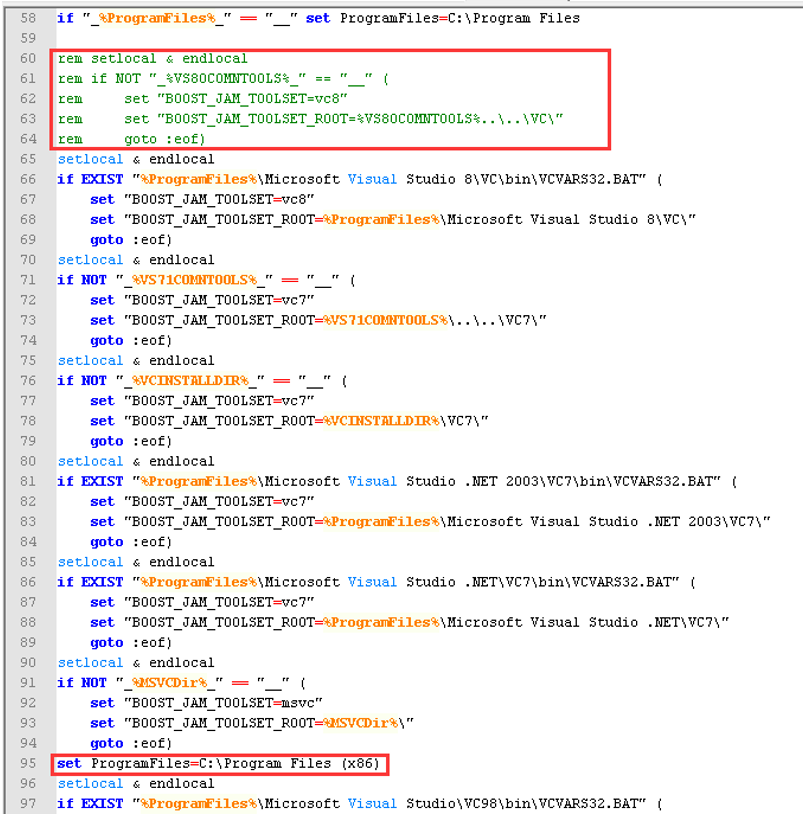
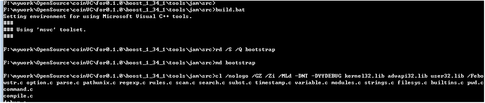

VC6编译Boost
- 下载和直接包含源码使用Boost:
- 到Boost官方网站可以下载Boost的1.34.1版。http://sourceforge.net/projects/boost/files/boost/1.34.1/
- 将Boost压缩包解压到C：\Boost下
- 在VC->Tools->Options->Directories->Include files里面增加D:\Boost\boost_1_37_0
- 打开vc6.0选择“Tools->Options->Directories->Include files,加入包含文件路径"C:\BOOST"(或D:\Lnhoo.Device.Driver\02_src\02_Common\Boost\boost_1_34__vc6_\boost_1_34__vc6_)
- 直接包含源码方式初步使用Boost：此时绝大多数的类库已经可以使用了，因为里面已经有.h和.cpp的完整源码，所以直接包含在你的工程，等你的工程需要的时候，才将Boost一些库功能进行编译。
boost库中大部分组件不需要编译，直接包含对应头文件即可使用，如#include "boost/array.hpp"，因为组件的声明和实现都包含在头文件hpp中。
其它一些库需要编译成静态库或动态库才能使用，如date_time、regex、thread、locale、signals、python等，不过这其中有些库不需要编译也可以使用其部分功能，而且有些库有不必编译的替代品，如xpressive可替换regex，signals2可以替换signals。
可使用以下代码进行测试：
#include <vector> #include <iostream> #include <boost/lexical_cast.hpp> using namespace boost ; using namespace std ; int main(int argc, char * argv[]) { vector<int> v1; vector<int>::const_iterator ci_v1 ; int iLength = 0 ; while( iLength < 10 ) { try { if ( iLength == 5 ) v1.push_back(lexical_cast<int>("DukeJoe")) ; else v1.push_back(lexical_cast<int>(iLength)); } catch(bad_lexical_cast &ex;) { cout << ex.what()<< endl ; v1.push_back(-1); } iLength++ ; } cout << "vector --> " ; for ( ci_v1 = v1.begin() ; ci_v1 != v1.end() ; ci_v1++ ) { cout << *ci_v1 << " " ; } cout << endl ; return 0 ; }
- 使用nmake编译单个Boost子库：以编译regex功能子库为例。
可以先将Boost类的功能编译成.dll和.lib等链接库，以减少编译时间，等到我们的工程使用的时候，只需要引用.dll，.lib，还有相应的.h就可以了。一般Boost库是由多个子库功能组合起来的，子库位于X:\Boost\boost_1_37_0\libs下面的文件夹，一个文件夹就是一个子库。可以一下子全部编译所有的子库，也可只编译某一些子库，如regex功能子库。
- 将vc安装目录下\Microsoft Visual Studio\VC98\搜索Bin 找到名为VCVARS32.BAT的批处理文件，并将其拷贝到C:\Boost\libs\regex\build目录下。
- cmd进入到C:\boost\libs\regex\build目录下，执行VCVARS32.BAT（目的是使编译文件命令nmake可用，否则 将提示nmake既不是内部也不是外部命令）后，敲入:nmake -f vc6.mak对其进行编译，
- 数分钟后，待编译完成后，在C:\boost\libs\regex\build目录下将产生名为vc的文件夹。我们将vc文件夹下的lib文件和 dll文件全部拷贝，在vc安装目录下xxx \Microsoft Visual Studio\VC98\下新建文件夹，名称自定如BoostRegx，将lib和dll文件放入该文件夹中。
- 使用bjam来编译
- 编译bjam：如果系统安装多个VS版本，可以修改boost_1_34_1\tools\jam\src\build.bat，通过注释其他版本来选择VC6.0版本生成bjam.exe

还有另外一种改法：
定位到D:\Boost\boost_1_37_0\tools\jam\src，使用记事本打开build.bat(先备份一下)，里面有部分内容如下：
//-------------------------------------------------------------------------------------------
:Guess_Toolset REM Try and guess the toolset to bootstrap the build with... REM Sets BOOST_JAM_TOOLSET to the first found toolset. REM May also set BOOST_JAM_TOOLSET_ROOT to the REM location of the found toolset.
if "_%ProgramFiles%_" == "__" set ProgramFiles=C:\Program Files
//-------------------------------------------------------------------------------------------
如果你的VC安装在D盘，则要改一下红色部分配置。
- 生成bjam.exe：打开cmd命令行，进入到boost_1_34_1\tools\jam\src目录下，运行build.bat，build.bat会运行VCVARS32.BAT，设置环境变量，并编译生成bjam，如图

最终会在目录下生成一个名为bin.ntx86的文件夹里面包含一个bjam.exe可执行文件。
- 将bjam.exe拷贝到boost_1_34_1目录下，CMD进入boost_1_34_1目录，运行 bjam
--toolset=msvc-6.0进行编译，bjam --toolset=msvc-6.0 install 生成相应的头文件（include）和
库文件（lib），默认生成在C:\boost下面。
单独编译regex子库：bjam --toolset=msvc-6.0 --build-type=complete --prefix=d:\boost install --with-regex
编译全部Boost子库(可能要2小时)：bjam --toolset=msvc-6.0 --build-type=complete --prefix=d:\boost install
- 编译bjam：如果系统安装多个VS版本，可以修改boost_1_34_1\tools\jam\src\build.bat，通过注释其他版本来选择VC6.0版本生成bjam.exe
- 设置包含路径
将上面所说的编译好的boost静态库的目录添加到当前项目的附加库目录：项目属性-链接器-附加库目录。
清除之前Include files里面的Boost源码路径，再在VC->Tools->Options->Directories->Include files里面增加新生成的D:\Boost\boost_1_34_1
选择"Tools->Options->Directories->Library file" 编辑添加库文件路径 xxx\MICROSOFT VISUAL STUDIO\VC98\BOOSTREGX（这个是前面建立的文件夹BoostRegx的位置）。(或D:\Lnhoo.Device.Driver\02_src\02_Common\Boost\boost_1_34__vc6_\boost_1_34__vc6_\boost\libs\regex\build)
- lib文件改名：libboost_regex-vc6-s-1_34.lib改名为libboost_regex-vc6-s-1_34_1.lib;libboost_regex-vc6-sgd-1_34.lib改名为libboost_regex-vc6-sgd-1_34_1.lib
- 运行测试程序，boosttest2 -->OK